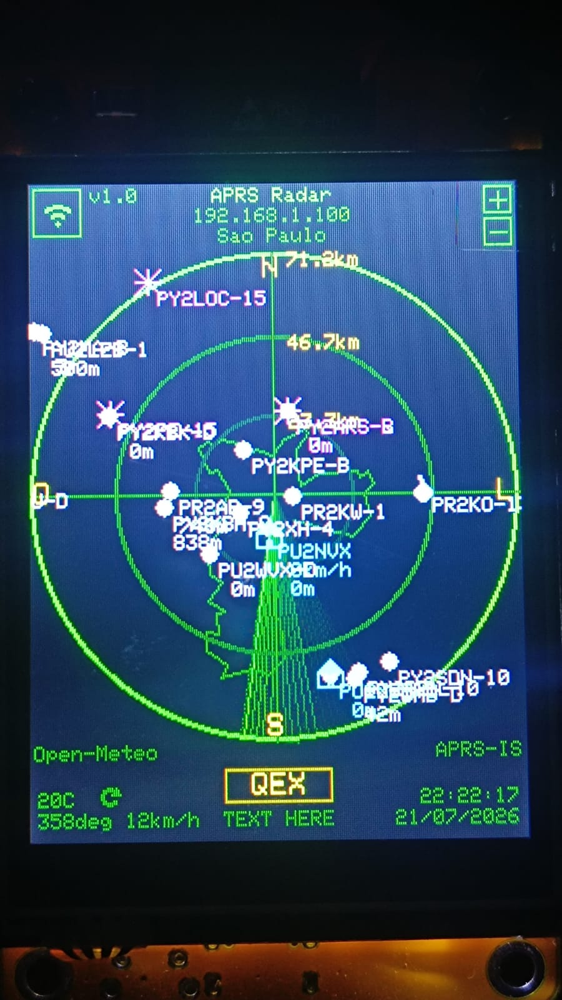
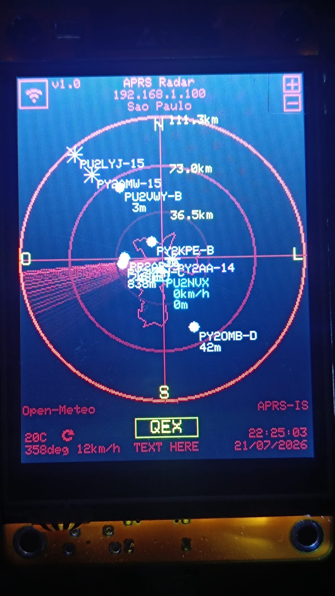

Micro Radar APRS
RASTREADOR DE ESTACOES APRS - ESP32 CYD - v1.0


Grave o firmware direto pelo navegador. Nao precisa instalar VSCode, PlatformIO nem baixar nada.
Como instalar
- Conecte a placa CYD ao computador com um cabo USB de dados (muitos cabos so tem os fios de energia e nao funcionam).
- Clique em CONECTAR E INSTALAR.
- Escolha a porta serial da placa na janela do navegador
(aparece como
CH340,CP210xouUSB-SERIAL). - Vai aparecer uma caixa "Erase device". DEIXE ELA DESMARCADA e clique em Next.
- Confirme e aguarde a gravacao terminar. A placa reinicia sozinha.
Atualizando uma placa que ja funciona?
Nao marque a caixa "Erase device". Deixando-a desmarcada, o WiFi, a
calibracao da tela e todas as suas configuracoes sao preservados. Marcar apaga tudo e voce
tera de configurar do zero.
Se nenhuma porta aparecer na lista, falta o driver USB-serial da placa.
Instale o driver CH340 ou CP210x (depende do
chip da sua CYD), desconecte e conecte a placa de novo.
Depois de gravar
- Na primeira vez, a tela pede para calibrar o toque: toque nos cantos indicados.
- A placa cria uma rede Wi-Fi chamada MicroRadar-Setup (o nome tambem aparece na tela). Conecte o celular ou o computador nela.
- A tela de configuracao abre sozinha. Escolha a sua rede Wi-Fi e digite a senha.
- A placa reinicia e mostra o IP dela na tela. Abra esse IP no navegador para configurar a posicao do radar, o indicativo/servidor APRS-IS, o clima e a cor da tela.
Nao consegue usar o navegador?
Baixe o instalador offline (Windows),
extraia e execute gravar.bat.